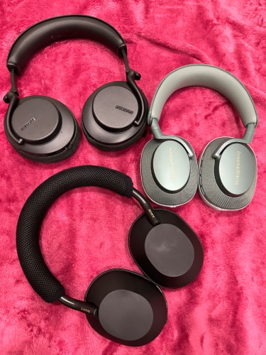
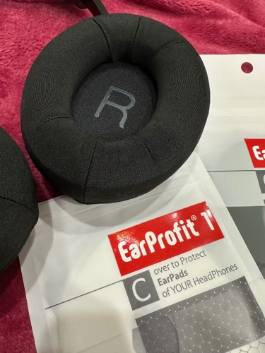

2024-06-01

최근에 이어폰끼다가 외이도염에 걸려서 고생하는중이라 그런건지
한동안 헤드폰 사팔병에 걸렸었다.
얼마전에 이것저것 사서 어쩌고하는 거한번 썼는데 또쓰는거임
sony wh-1000xm4를 사서 3년정도 잘쓰다가,
팔고나서 이거사니 이건뭐가 마음에 안들고 이건 이게 마음에 안들고 어쩌고 하면서
짧은기간동안 왠만한 블루투스 헤드폰은 건드려본거같음.
그중
bose QC ultra, b&o beoplay hx, sony ult wear는 잠시 사용해 본후 방출,
sony wh-1000xm5는 회색샀다가 방출, 검은색 다시 삼...중고로 사서인지 몰라도 뭔가 가장 만만한 포지션 획득
b&w px7s2e는 예쁨담당, shure aonic 50 gen2는 뭔가 무식하게생겼는데 소리는 좋다 담당임
솔직히 3가지다 큰 차이는 없어서 정리하고 하나만 남겨도 될거 같긴한데 못고르겠어서 일단 그냥 써봐야겠다.;;
그중에 일본헤드폰유튭버가 이 헤드폰커버 무조건 사야됨하길래 웃기고있네 싶었는데, 써보니 정말 쾌적해서
좋다고 쓰고있는중인데, 솔직히 가격생각하면 그냥 쓰다가 나중에 정품패드로 가는게 나을까 싶을정도이긴함.
여튼 써보면 촉감이 시원하고 뭔가 좋음.
여튼그런데, shure aonic 50은, 전용사이즈가 따로있음! 이래놓고 품절이고
뭐 그래서 어쩌라는거지 하다가 mimimamo라는 귀가 안뚫린 통으로 된커버를 사봤는데 이건 촉감이 영별로였음.
그래서 헤드커버안쪽이 좁아서, 개조를하면 된다 하는 트윗을 보고 나도해볼까 하고 적당해보이는 xm60을 사서 가만히 살펴보니
들어갈거같기도한데...그래서 헤드커버 떼어내서 뒷쪽을보니 링이랑 여튼 사이즈가 비슷함.
그래서 살살달래서 밀어넣으니 개조안하고 그냥 들어갔다 아주 좋아(힘으로 해결)
